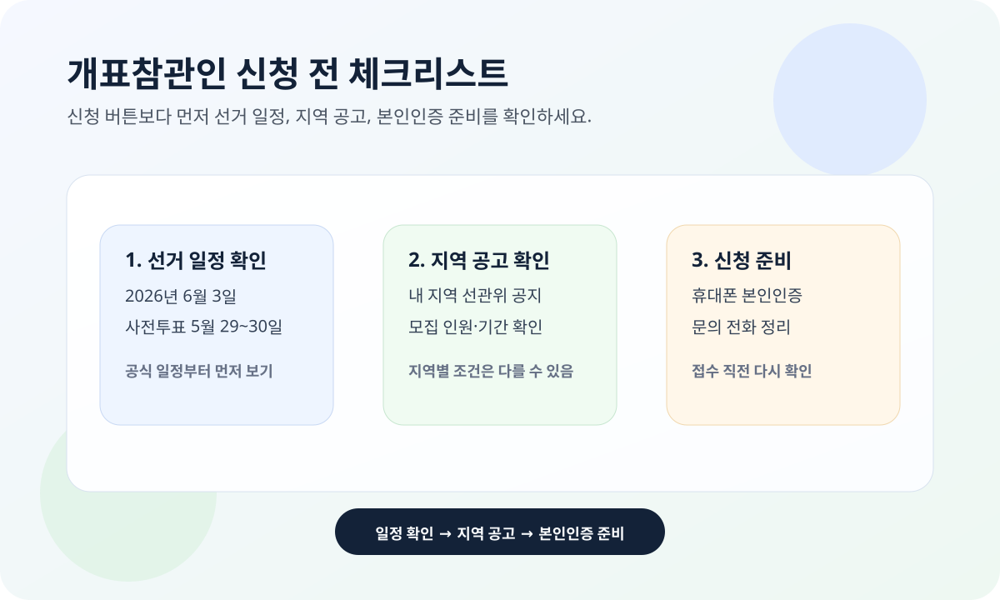

개표참관인 신청을 찾는 사람이 많지만, 2026년 지방선거는 아직 지역별 공고를 직접 확인하는 단계가 더 중요합니다. 2026년 3월 23일 기준 중앙선거관리위원회 개표참관인 신청 페이지에는 “개표참관인 신청기간이 아닙니다”라는 안내가 표시됩니다.
이 글은 중앙선거관리위원회 공식 신청 페이지와 지방선거 일정 안내를 기준으로 정리했습니다. 실제 신청 기간과 모집 인원은 지역 선관위별 공고에 따라 달라질 수 있으니, 접수 직전에는 반드시 최신 공고를 다시 확인하세요.

2026년 지방선거 일정부터 확인해야 하는 이유
경기도선거관리위원회가 2026년 1월 16일 공개한 일정 안내에 따르면 제9회 전국동시지방선거 선거일은 2026년 6월 3일이고, 사전투표는 5월 29일부터 5월 30일까지 진행됩니다.
개표참관인 모집은 보통 선거일이 가까워지면 지역 선관위 공고로 열립니다. 그래서 지금 시점에는 검색 결과 글보다 내 지역 선관위 공지와 중앙선관위 신청 페이지 상태를 함께 보는 편이 정확합니다.
2026-03-23 현재 공식 페이지에서 확인되는 점
- 중앙선관위 개표참관인 신청 페이지는 열려 있지만 현재는 신청기간 아님 안내가 뜹니다.
- 페이지에는 휴대폰 본인인증이 필요하다는 문구가 보입니다.
- 같은 화면에서 신청 내역 보기와 시·도 및 구·시·군 선거관리위원회 전화번호 이동 경로를 확인할 수 있습니다.
즉, “아직 바로 신청하는 단계”라기보다 공고가 열릴 지역 선관위를 미리 찾고, 본인인증 가능한 환경을 준비하는 단계로 이해하면 맞습니다.
신청 전에 가장 먼저 볼 체크리스트
- 내 지역 선관위 공고가 올라왔는지 확인합니다.
- 신청 기간과 모집 인원이 명시됐는지 봅니다.
- 신청 자격 제한이나 제외 대상이 적혀 있는지 확인합니다.
- 휴대폰 본인인증이 가능한지 점검합니다.
- 신청 후 내역 조회가 가능한지, 문의 전화가 어디인지 확인합니다.
개표참관인은 선거마다 신청 창구는 비슷해도 세부 공고 문구는 지역별로 달라질 수 있습니다. “어디서 신청하나”보다 “내 지역 공고가 떴나”를 먼저 보는 순서가 안전합니다.
알바처럼만 보면 놓치기 쉬운 부분
검색에서는 개표참관인 알바처럼 많이 보이지만, 공식 명칭은 개표 과정을 참관하는 역할에 가깝습니다. 수당, 운영 시간, 집결 장소 같은 실무 정보는 지역 선관위 공고에 따라 달라질 수 있어서 기사 제목만 보고 단정하면 안 됩니다.
따라서 금액이나 근무 시간을 미리 확정적으로 기대하기보다, 공고가 열리면 활동 시간, 집합 장소, 준비물, 문의처를 한 번에 확인하는 편이 좋습니다.
한 번에 요약하면
- 2026년 지방선거 선거일은 2026년 6월 3일입니다.
- 2026-03-23 현재 중앙선관위 개표참관인 신청 페이지에는 신청기간 아님 안내가 표시됩니다.
- 지금은 내 지역 선관위 공고 위치와 본인인증 가능 여부를 먼저 확인할 시점입니다.
- 실제 신청 기간, 인원, 세부 조건은 지역 선관위 공고를 다시 봐야 합니다.
- 금액이나 시간 같은 정보는 바뀔 수 있으니 접수 직전에 공식 페이지를 다시 확인해야 합니다.
자주 묻는 질문
Q. 지금 바로 개표참관인 신청이 되나요?
2026년 3월 23일 기준 중앙선거관리위원회 신청 페이지에는 신청기간이 아니라는 안내가 표시됩니다. 지역별 공고가 열렸는지 먼저 확인하세요.
Q. 어디서 모집 공고를 보면 되나요?
중앙선관위 개표참관인 신청 페이지와 시·도 및 구·시·군 선거관리위원회 안내 페이지에서 내 지역 선관위 공고와 연락처를 확인하는 것이 가장 안전합니다.
Q. 신청 전에 미리 준비할 것은 무엇인가요?
휴대폰 본인인증 가능 여부, 공고 확인 경로, 문의 전화번호를 미리 정리해두면 실제 접수 때 덜 헷갈립니다.
공식 링크
개표참관인 모집 공고와 활동 조건은 지역 선관위 사정에 따라 달라질 수 있습니다. 신청 직전에는 위 공식 페이지에서 최신 공고와 접수 가능 여부를 다시 확인하세요.